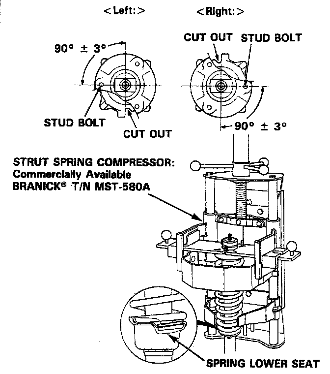
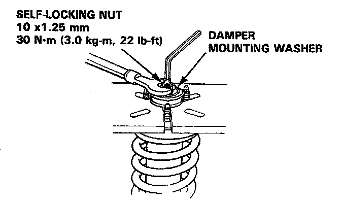

Reassembly
Reassembly
1. Install the damper unit on a spring compressor.
NOTE: Follow the manufacturer's instructions.
2. Assemble the damper in the reverse order of disassembly except the damper mounting washer and self-locking nut.
NOTE: Align the bottom of damper spring and spring lower seat as shown.

3. Position the damper mounting base on the damper unit as shown.
4. Compress the damper spring.
5. Install the damper mounting washer and a new self-locking nut.

6. Hold the damper shaft and tighten the self-locking nut.